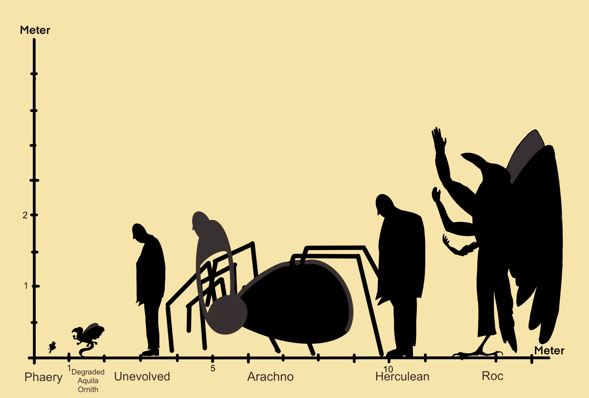
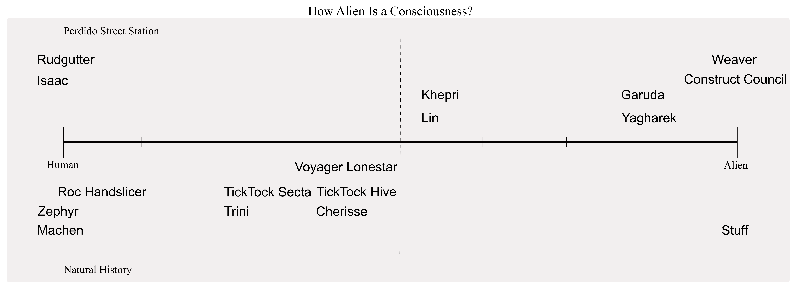

Bis heute haben wir das Enigma des menschlichen Bewusstseins noch nicht vollständig gelöst oder begriffen. Es gibt etliche Theorien über unser Bewusstsein und wie wir unsere Welt verarbeiten, gibt es in diesem Diskurs dann überhaupt Platz für das Bewusstsein von Wesen, die es noch gar nicht gibt?
Ein Blick in die Zukunft. Die Menschheit ist weit fortgeschritten und zu einer raumfahrenden Zivilisation geworden. Was früher endlos viele Ressourcen gekostet hätte ist nun ein Kinderspiel. Die Grenze zwischen Mensch und Maschine ist so weit verschwommen, dass es einen Begriff für diese scheinbar neue Spezies gibt, die Forged, die Geschmiedeten. Sie sind Wesen, deren Bewusstsein sowohl von ihrer Menschlichkeit als auch von ihrem Design abhängt. Sie sind Maschine und Organismus, Raumschiff und Person, manchmal sogar eine Mischung mit tierartigem Aussehen. Sie besitzen ein menschliches Bewusstsein und einen vollkommen künstlichen Körper, der jedoch auch aus organischem und modifiziertem biologischen Material bestehen kann.
Geschmiedete
In Science-Fiction ist es für Autor*innen üblich Eigennamen für Kreaturen, Objekte, oder andere Dinge zu vergeben. Einige Autor*innen wollen Eigennamen nicht erklären, weil diese implizit durch die Handlung oder Diskurswelt erklärt werden, eine Leerstelle im Begriff kann auch für das Storytelling nützlich sein. Bei Robsons Geschmiedeten lernt man die Natur und das Ausmaß der Wesen stetig über das Buch hinweg kennen.
Mit diesem Konzept schreibt Justina Robson ihr Buch Natural History aus dem Jahr 2004. Sie löste damit eine Diskussion über Menschlichkeit aus, schreibt die Unterdrückung der Geschmiedeten und ihr Verlangen nach Freiheit von der menschlichen Sklaverei nieder. Sie gibt uns damit ein Gedankenexperiment, das in Zukunft äußerst relevant werden könnte, um folgende Frage zu beantworten: “Wo hört der Mensch auf und wo fängt das Objekt, die Maschine an?” Und vor allem: Wenn wir bis dahin noch keine Antwort auf die Frage „Was ist unser Bewusstsein eigentlich?“ haben und Künstliche Intelligenz den Menschen modifiziert, kann es überhaupt eine sinnvolle Antwort auf diese Fragen geben?
Lösung oder Einordnung?
Auf der jetzigen Suche nach Antworten und einer Lösung des Problems hilft uns jedoch erstens ein Wort weiter: Alienness, Alienhaftigkeit. Aber ich denke dabei nicht per se im Science-Fiction Sinn an kleine grüne Wesen, die uns aus unseren Wohnzimmern entführen, nein, Alienness ist etwas Andersartiges. Aber anders als was? Menschlichkeit (Vgl. Slusser 1987). Wir haben also hiermit einen relationalen Begriff, mit dem wir weder Mensch noch Maschine ausschließen, aber eine Änderung des menschlichen Zustandes feststellen können.
Zweitens müssen wir uns damit abfinden, dass wir Bewusstsein an sich nur vage definieren können und unsere Definition davon universell verwendbar sein sollte. Obwohl ich momentan nur wissen kann, wie es ist „ich“ zu sein, ein Mensch, muss ich dennoch versuchen andere Lebewesen wie Tiere und Maschinen einzuschließen.
Hierbei hilft uns Thomas Nagels Gedankenexperiment „What it is like to be a bat”, wie es ist eine Fledermaus zu sein. Er schreibt, dass jeder, der einmal in einem dunklen Raum mit einer aufgeregten Fledermaus saß und ihr scheinbar sinnloses Geflatter aushalten musste weiß, wie andersartig, wie alienhaft diese Tiere sind. Doch genau diese Erfahrung können wir uns zu Nutze machen. Wir wissen zwar, dass ihre Erfahrung andersartig ist, aber dass sie am Ende des Tages irgendeine Form von Bewusstsein besitzen. Nach Thomas Nagel ist also alles bewusst, von dem man etwas zuordnen kann „wie es ist diese Kreatur zu sein“. Diese Definition des Bewusstseinsbegriffs ist sehr abstrakt und umstritten, aber hier das Fledermaus Beispiel: eine Fledermaus hat zwar nicht die gleichen Sinne wie wir und wir können damit niemals authentisch nachvollziehen wie es ist, eine Fledermaus zu sein, aber wir wissen, was es bedeutet „wie es ist eine Fledermaus zu sein“: mit anderen sensorischen Sinnen sich im Raum zu orientieren, eine hohe Körpertemperatur zu haben, etc. somit hat jedes Wesen, jede Kreatur, auch der Mensch etwas „wie es ist“ diese Kreatur zu sein (Vgl. Nagel 2006).
Aus Science-Fiction Wesen einen Sinn stricken
Jetzt haben wir ein Mittel, um Justina Robsons Schöpfungen einzuordnen. An zwei Beispielen möchte ich nun zeigen, wie andersartig ihre Wesen sind und wie der Bewusstseinsbegriff in Science-Fiction erkundet und erweitert wird.
Ein Roc-Handsclicer zum Beispiel ist ein aufrecht laufender vogelartiger Geschmiedeter, der im Maßstab zum Menschen noch annehmbar groß ist, der Kälte und dem Druck des Weltraums standhalten, durch den Weltraum frei navigieren und Sternentrümmer abbauen kann. „Wie es ist, ein Roc-Handsclicer zu sein“ ist daher noch nachvollziehbarer, weil die Geschmiedeten ein menschliches Bewusstsein besitzen, das künstlich hergestellt wurde und weil man sich z. B. vorzustellen kann in einem Raumanzug durch das Weltall zu fliegen, um Sternentrümmer zu bergen. Ein Roc-Handslicer muss essen, sich pflegen, er hat einen mentalen Gesundheitszustand, der der menschlichen Erfahrung ähnlich ist. Er ist daher andersartig, aber sehr menschenähnlich und ist damit auf einer Skala, die Menschlichkeit und Andersartigkeit vergleicht nahe des linken Extrems, der Menschheit, im Diagramm 1 zu finden.
Stuff, das Zeug, ist Robsons abstrakteste Kreatur, welche damit gleichzeitig jedoch auch das interessanteste Bewusstsein besitzt. Das Zeug ist eine Vielzahl an Konzepten und Dingen; es ist die letzte Form einer raumfahrenden Zivilisation wie unserer, welche die Existenz in Zeit und Raum zu leben wie wir es tun in ihrer Wissenssuche aufgegeben hat und jetzt, wie Robson sagt, in Eleven-D, in elf Dimensionen existiert. Es existiert gleichzeitig im ganzen Universum und an einzelnen Punkten als physisches Ding. Wenn es physisch ist und ein lebendiges Wesen einen Wunsch an es richtet, wird es diesen erfüllen, egal ob der Wunsch physikalisch möglich ist oder nicht. Der Wunsch muss sich aber auf die Realität beziehen–mit dem Preis in der Zukunft auch zu Zeug zu werden. Es ist eine Technologie, ein Ding, ein Wesen, eine Zivilisation. „Wie es ist, Zeug zu sein“ ist nahezu unvorstellbar. An einem Punkt war es sehr menschenähnlich, sein momentaner Zustand liegt weit über dem, was wir uns vorstellen können. Es ist so andersartig, dass es seinen Platz auf dem rechten Extrem, der Andersartigkeit, im Diagramm 1 verdient hat.
Wir werden in der Zukunft zum Beispiel dazu fähig sein, Künstliche Intelligenzen zu erschaffen, die so menschenähnlich sind, dass wir uns fragen müssen: “Wo und wie sollen wir diese Wesen einordnen?” “Sie sind definitiv andersartig, nur auf welche Weise?” “Was für ein Bewusstsein besitzen sie?” Gedankenexperimente wie Robsons Wesen einzuordnen geben uns extreme Beispiele, an denen wir später unsere reellen Probleme greifbarer machen können.
Mensch oder Maschine, Cyborg oder mehr? Wenn wir die heutigen technologischen Entwicklungen betrachten, kommen für uns einige Fragen auf. Vielleicht kannst du nun eine mehr beantworten oder einen Sinn daraus stricken, oder du hast noch viele mehr bekommen.
Literaturangaben
- Nagel, Thomas. “What Is It Like to Be a Bat?” Theories of Mind: An Introductory Reader. Ed. Maureen Eckert. Rowman & Littlefield Publishers: 2006, p.186-198.
- Robson, Justina. Natural History. Pan Books: London 2004.
- Slusser, George E.; Rabkin, Eric S. Aliens: The Anthropology of Science Fiction. Southern Illinois University Press 1987.
Bilderverzeichnis
Titelbild: pixabay; Grafik1: Patrick Muczczek; Grafik2: Patrick Muczczek; Autor:innenbild: Daniel Böckle